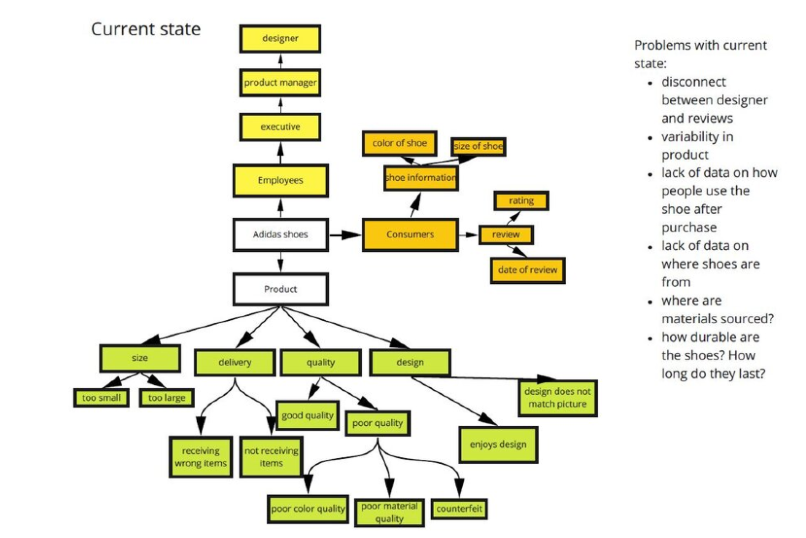
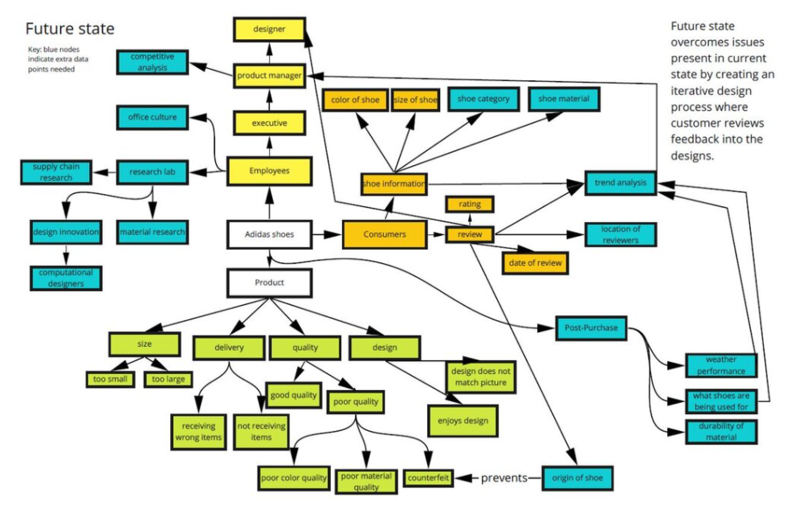
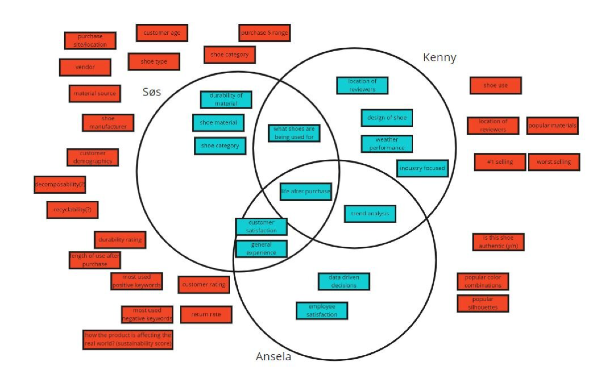

INTRODUCTION
In a project for our Interaction Design Studio, my team was tasked with creating a dashboard for personas we were given at Adidas and from Adidas sales data. While I was hesitant to use personas because of a possible abstraction away from the user’s actual needs they were useful in this project to understand the system and overall needs of the client.
EXAMPLE PERSONA
![Title says user persona. On the left is a collectio of images a full body image of a light East Asian man, along with a meeting room on the top rightm and a picture of an adidas shoe on the bottom right. On the left is his name which is Kenny Won. Under that is a description of him and his goals. The full text is '33, Adidas Director od Fashion Sneaker Marketing for North America, From LA, now in rainy Portlan, single, foodie, not a hipster, more Pinterest than Reddit. ...Recently moved to Portland for his job. He previously worled in marketing for Superdry in HK. Took the Adidas job to come home to the US. Kenny loves fashion, fashion sneakers, and the way sttyles move around the world. He's intrigued and horrified by Portland's hipster culture. He likes to get the designers out into the cit and the world to show them what real people are really doing. He takes them on sight seeing tours to see what and how people are wearing showes. He understands that his decisions by spreadsheets, but he also knows risk taking comes from being in the street. Goals: -Ends:Wants credit for innovating Fashion Sneakers. Maybe wants to be poached by Cos, Nike, or mayve a startup like Stichfix. -Experience: Wants to understand the interplay between marketing and fashion. How can both lead and both follow? -Life:Wants to transform the fashion world.'](../Assets/adidas/userPersona.png)
Other personas included Sos a designer that cares about sustainability and Ansela the Vice President that cares about data and sales. From our user personas and sales data, we began with affinity diagramming to understand some overall ideas and pain points that existed in the space. We then created models of the current state without the dashboard and the future state we wanted to represent. Then we diverged and converged again by thinking all of the commonalities that our personas had and data that we could use to represent them.
  We used our common data points to come up with several individual sketches. Then we considered our previous diagrams and what we liked about the designs and conducted a review session where we posted notes to understand where we would converge in our design. We progressed through the iteration design process using peer and professor critiques to give us insights on the usability and legibility of our design. Our design presents aggregate data about shoe categories as well as helpful social media data and upcoming launch data that helps designers contextualize their designs. Below are examples of how our designed progressed.
![On the left there is an a low-fi prototype of the dashboard. The dashboard has a spider graph showing different metrics of the selected shoe with differnt sized bubbles around it showing user feedback and below a a box chart showing different geographic data. On the right there is a summary of findings that says 'In this iteration we took things we liked from our individual designs and combined them with a spider graph to show more aggregate data. We wanted to support these actions: Sos uses the MSI in the spider graph to balance sales and sustainability, Sos and Kenny compare differnt shoe categories and are inspired by different shoe category aspects, All of them can see which shoe categories are performing well and why, and Kenny can see geographic data which can inspire him to look into geographic trends.](../Assets/adidas/firstDraft.png)
![This is the second draft and in the middle is the spider graph from before with box widgets on the left and right. The text lists the changes which are: Added Adidas branding and a way to switch between the shoe dta that is being presented, Added maps we had in individual sketches to present global data, Factory footprint also shows sustainability data for shoe production, Shoe silhoutttes from earlier designs as a legend to show shoe categories presrented, we created a more clear hierarchy and used the horizontal space better in this design, included incoming lauches to contextualize designs and give Ansela a way to connect data to upcoming projects, and added a social media widget.](../Assets/adidas/secondDraft.png)
![This is the final design and the shoe categories have moved to the left as well as the spider graph and the widgets are on the right. The text points out the improvements: increased opacity of spider chart data to make information more readable, made spider chart legend more clear by making colors more prominent around shoe silhoutttes, removed facotry footprint due to lack of actionable data and added material breakdown for Sos instead, rearranged components to create more logical groupings, and converted thus geographical data into a bar graph so data is more clear.](../Assets/adidas/finalDraft.png)